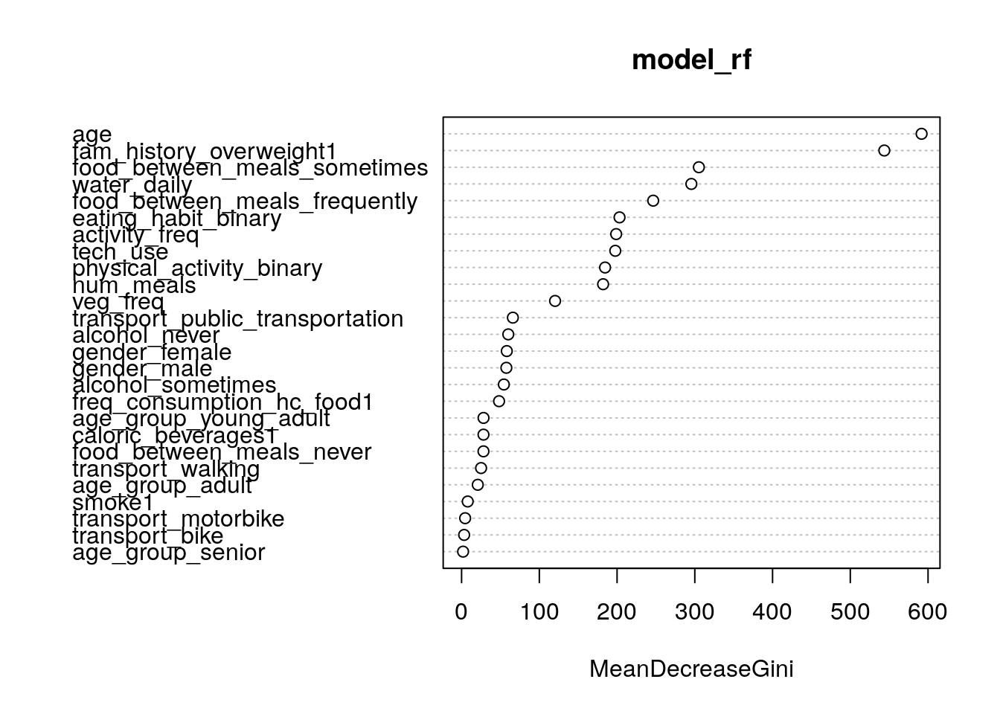
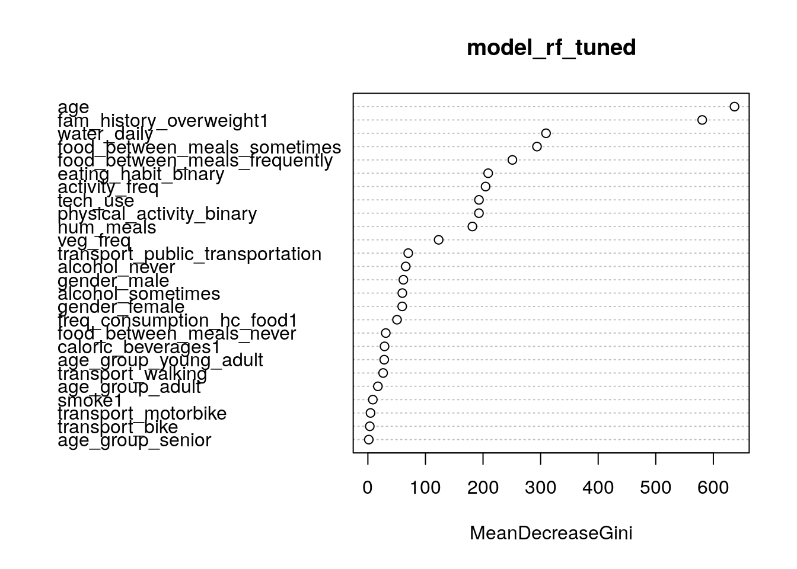
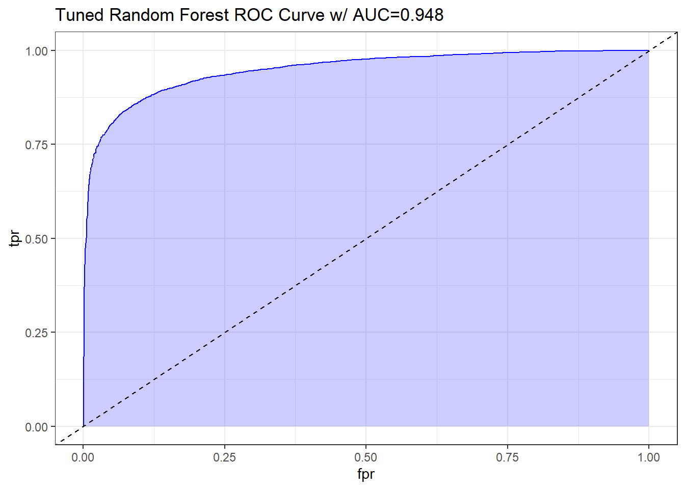

8 Random Forest (RF)
8.1 Introduction
Below paragraph is copied from the assignment, we are planning on updating this as we formulate our narrative for the final deliverable:
Random Forest (RF) is an ensemble learning method, combining multiple decision trees to reduce overfitting and handle complex relationships. RF constructs numerous decision trees during training, with each tree casting a vote on predictions. The final prediction is derived from the majority vote of all individual trees, minimizing overfitting and enhancing accuracy (Majority Vote System). Although an advanced form of DT, RF can be computationally expensive due to longer training times compared to simpler models. We will build two RF models: a basic and fine-tuned version.
8.2 Load Data
# Load data
train_rf <- read.csv('Train Test Set/train_rf.csv')
test_rf <- read.csv('Train Test Set/test_rf.csv')
# Display statistics
str(train_rf)## 'data.frame': 10379 obs. of 27 variables:
## $ gender_female : int 1 1 1 0 1 1 1 0 1 1 ...
## $ gender_male : int 0 0 0 1 0 0 0 1 0 0 ...
## $ age : int 24 34 19 19 25 26 23 27 26 20 ...
## $ fam_history_overweight1 : int 1 1 1 1 1 1 1 1 1 0 ...
## $ freq_consumption_hc_food1 : int 1 1 1 1 1 1 0 1 1 0 ...
## $ veg_freq : num 3 2.1 3 3 3 ...
## $ num_meals : num 3 2.98 3 3 3 ...
## $ food_between_meals_frequently : int 0 0 0 0 0 0 0 0 0 1 ...
## $ food_between_meals_never : int 0 0 0 0 0 0 0 0 0 0 ...
## $ food_between_meals_sometimes : int 1 1 1 0 1 1 1 1 1 0 ...
## $ smoke1 : int 0 0 0 0 0 0 0 0 0 0 ...
## $ water_daily : num 2.47 1.96 2.87 3 2.86 ...
## $ caloric_beverages1 : int 0 0 0 1 0 0 0 0 0 0 ...
## $ activity_freq : num 0.167 0.988 1.465 3 0.265 ...
## $ tech_use : num 0.487 0 0.656 0 0.673 ...
## $ alcohol_never : int 0 0 0 0 0 0 0 0 0 0 ...
## $ alcohol_sometimes : int 1 1 1 1 1 1 1 1 1 1 ...
## $ transport_bike : int 0 0 0 0 0 0 0 0 0 0 ...
## $ transport_motorbike : int 0 0 0 0 0 0 0 0 0 0 ...
## $ transport_public_transportation: int 1 0 1 1 1 1 1 1 1 1 ...
## $ transport_walking : int 0 0 0 0 0 0 0 0 0 0 ...
## $ obesity_leveloverweight : int 1 1 1 1 1 1 1 1 1 0 ...
## $ eating_habit_binary : num 2.67 2.36 2.67 2.67 2.67 ...
## $ physical_activity_binary : num -0.32 0.988 0.809 3 -0.408 ...
## $ age_group_young_adult : int 1 1 1 1 1 1 1 1 1 1 ...
## $ age_group_adult : int 0 0 0 0 0 0 0 0 0 0 ...
## $ age_group_senior : int 0 0 0 0 0 0 0 0 0 0 ...## gender_female gender_male age fam_history_overweight1
## Min. :0.0000 Min. :0.0000 Min. :14.00 Min. :0.0000
## 1st Qu.:0.0000 1st Qu.:0.0000 1st Qu.:20.00 1st Qu.:1.0000
## Median :1.0000 Median :0.0000 Median :23.00 Median :1.0000
## Mean :0.5079 Mean :0.4921 Mean :23.81 Mean :0.8177
## 3rd Qu.:1.0000 3rd Qu.:1.0000 3rd Qu.:26.00 3rd Qu.:1.0000
## Max. :1.0000 Max. :1.0000 Max. :61.00 Max. :1.0000
## freq_consumption_hc_food1 veg_freq num_meals
## Min. :0.0000 Min. :1.000 Min. :1.000
## 1st Qu.:1.0000 1st Qu.:2.000 1st Qu.:3.000
## Median :1.0000 Median :2.445 Median :3.000
## Mean :0.9166 Mean :2.452 Mean :2.758
## 3rd Qu.:1.0000 3rd Qu.:3.000 3rd Qu.:3.000
## Max. :1.0000 Max. :3.000 Max. :4.000
## food_between_meals_frequently food_between_meals_never
## Min. :0.0000 Min. :0.00000
## 1st Qu.:0.0000 1st Qu.:0.00000
## Median :0.0000 Median :0.00000
## Mean :0.1212 Mean :0.01253
## 3rd Qu.:0.0000 3rd Qu.:0.00000
## Max. :1.0000 Max. :1.00000
## food_between_meals_sometimes smoke1 water_daily
## Min. :0.0000 Min. :0.00000 Min. :1.000
## 1st Qu.:1.0000 1st Qu.:0.00000 1st Qu.:1.796
## Median :1.0000 Median :0.00000 Median :2.000
## Mean :0.8446 Mean :0.01224 Mean :2.029
## 3rd Qu.:1.0000 3rd Qu.:0.00000 3rd Qu.:2.536
## Max. :1.0000 Max. :1.00000 Max. :3.000
## caloric_beverages1 activity_freq tech_use alcohol_never
## Min. :0.00000 Min. :0.00000 Min. :0.0000 Min. :0.0000
## 1st Qu.:0.00000 1st Qu.:0.00705 1st Qu.:0.0000 1st Qu.:0.0000
## Median :0.00000 Median :1.00000 Median :0.5740 Median :0.0000
## Mean :0.03276 Mean :0.98097 Mean :0.6147 Mean :0.2461
## 3rd Qu.:0.00000 3rd Qu.:1.58652 3rd Qu.:1.0000 3rd Qu.:0.0000
## Max. :1.00000 Max. :3.00000 Max. :2.0000 Max. :1.0000
## alcohol_sometimes transport_bike transport_motorbike
## Min. :0.0000 Min. :0.000000 Min. :0.000000
## 1st Qu.:0.0000 1st Qu.:0.000000 1st Qu.:0.000000
## Median :1.0000 Median :0.000000 Median :0.000000
## Mean :0.7289 Mean :0.001734 Mean :0.001927
## 3rd Qu.:1.0000 3rd Qu.:0.000000 3rd Qu.:0.000000
## Max. :1.0000 Max. :1.000000 Max. :1.000000
## transport_public_transportation transport_walking obesity_leveloverweight
## Min. :0.0000 Min. :0.00000 Min. :0.0000
## 1st Qu.:1.0000 1st Qu.:0.00000 1st Qu.:0.0000
## Median :1.0000 Median :0.00000 Median :1.0000
## Mean :0.8056 Mean :0.02226 Mean :0.7262
## 3rd Qu.:1.0000 3rd Qu.:0.00000 3rd Qu.:1.0000
## Max. :1.0000 Max. :1.00000 Max. :1.0000
## eating_habit_binary physical_activity_binary age_group_young_adult
## Min. :1.000 Min. :-2.0000 Min. :0.0000
## 1st Qu.:2.309 1st Qu.:-0.2790 1st Qu.:1.0000
## Median :2.333 Median : 0.2867 Median :1.0000
## Mean :2.375 Mean : 0.3662 Mean :0.9019
## 3rd Qu.:2.667 3rd Qu.: 1.0000 3rd Qu.:1.0000
## Max. :3.000 Max. : 3.0000 Max. :1.0000
## age_group_adult age_group_senior
## Min. :0.00000 Min. :0.000000
## 1st Qu.:0.00000 1st Qu.:0.000000
## Median :0.00000 Median :0.000000
## Mean :0.05222 Mean :0.003276
## 3rd Qu.:0.00000 3rd Qu.:0.000000
## Max. :1.00000 Max. :1.000000## gender_female gender_male age fam_history_overweight1
## 1 1 0 24 1
## 2 1 0 34 1
## 3 1 0 19 1
## 4 0 1 19 1
## 5 1 0 25 1
## 6 1 0 26 1
## freq_consumption_hc_food1 veg_freq num_meals food_between_meals_frequently
## 1 1 3.000000 3.000000 0
## 2 1 2.103335 2.977909 0
## 3 1 3.000000 3.000000 0
## 4 1 3.000000 3.000000 0
## 5 1 3.000000 3.000000 0
## 6 1 3.000000 3.000000 0
## food_between_meals_never food_between_meals_sometimes smoke1 water_daily
## 1 0 1 0 2.472903
## 2 0 1 0 1.964435
## 3 0 1 0 2.865590
## 4 0 0 0 3.000000
## 5 0 1 0 2.863513
## 6 0 1 0 1.347559
## caloric_beverages1 activity_freq tech_use alcohol_never alcohol_sometimes
## 1 0 0.167086 0.486868 0 1
## 2 0 0.987521 0.000000 0 1
## 3 0 1.464674 0.655571 0 1
## 4 1 3.000000 0.000000 0 1
## 5 0 0.264831 0.673210 0 1
## 6 0 0.217455 0.625350 0 1
## transport_bike transport_motorbike transport_public_transportation
## 1 0 0 1
## 2 0 0 0
## 3 0 0 1
## 4 0 0 1
## 5 0 0 1
## 6 0 0 1
## transport_walking obesity_leveloverweight eating_habit_binary
## 1 0 1 2.666667
## 2 0 1 2.360415
## 3 0 1 2.666667
## 4 0 1 2.666667
## 5 0 1 2.666667
## 6 0 1 2.666667
## physical_activity_binary age_group_young_adult age_group_adult
## 1 -0.319782 1 0
## 2 0.987521 1 0
## 3 0.809103 1 0
## 4 3.000000 1 0
## 5 -0.408379 1 0
## 6 -0.407895 1 0
## age_group_senior
## 1 0
## 2 0
## 3 0
## 4 0
## 5 0
## 6 08.3 Model RF
8.3.1 Simple RF
We will begin by constructing a basic RF model with 500 trees, followed by fine-tuning our RF model through grid search.
# Set seed for reproducibility
set.seed(12345)
# Build a model
model_rf <- randomForest(as.factor(obesity_leveloverweight) ~ .,
data = train_rf,
ntree = 500)## Length Class Mode
## call 4 -none- call
## type 1 -none- character
## predicted 10379 factor numeric
## err.rate 1500 -none- numeric
## confusion 6 -none- numeric
## votes 20758 matrix numeric
## oob.times 10379 -none- numeric
## classes 2 -none- character
## importance 26 -none- numeric
## importanceSD 0 -none- NULL
## localImportance 0 -none- NULL
## proximity 0 -none- NULL
## ntree 1 -none- numeric
## mtry 1 -none- numeric
## forest 14 -none- list
## y 10379 factor numeric
## test 0 -none- NULL
## inbag 0 -none- NULL
## terms 3 terms call
According to the variable importance plot, we observe a trend comparable to that of a DT model with an implemented cost matrix, indicating that RF models may be capturing the underlying dynamics between predictors effectively. The top-ranked features in this analysis are BMI, weight-to-height ratio, and water intake per weight.
8.3.2 Tuned RF
Next, we will perform tuning for our model by testing different values of mtry, which specifies the number of candidate features to consider at each node during tree construction. We will also execute 10-fold cross validation.
# Set seed for reproducibility
set.seed(12345)
# Set up control parameters
ctrl <- trainControl(method = 'cv',
number = 10,
verboseIter = TRUE,
savePredictions = TRUE)
# Define the parameter grid
grid <- expand.grid(mtry = c(2, 4, 6, 8))
# Tune the model
rf_tuned <- train(as.factor(obesity_leveloverweight) ~ .,
data = train_rf,
method = 'rf',
trControl = ctrl,
tuneGrid = grid)
# Retrieve best model
model_rf_tuned <- rf_tuned$finalModel## Random Forest
##
## 10379 samples
## 26 predictor
## 2 classes: '0', '1'
##
## No pre-processing
## Resampling: Cross-Validated (10 fold)
## Summary of sample sizes: 9340, 9341, 9341, 9341, 9341, 9342, ...
## Resampling results across tuning parameters:
##
## mtry Accuracy Kappa
## 2 0.8808175 0.6893266
## 4 0.8907405 0.7259605
## 6 0.8925709 0.7309532
## 8 0.8882357 0.7200674
##
## Accuracy was used to select the optimal model using the largest value.
## The final value used for the model was mtry = 6.## Length Class Mode
## call 4 -none- call
## type 1 -none- character
## predicted 10379 factor numeric
## err.rate 1500 -none- numeric
## confusion 6 -none- numeric
## votes 20758 matrix numeric
## oob.times 10379 -none- numeric
## classes 2 -none- character
## importance 26 -none- numeric
## importanceSD 0 -none- NULL
## localImportance 0 -none- NULL
## proximity 0 -none- NULL
## ntree 1 -none- numeric
## mtry 1 -none- numeric
## forest 14 -none- list
## y 10379 factor numeric
## test 0 -none- NULL
## inbag 0 -none- NULL
## xNames 26 -none- character
## problemType 1 -none- character
## tuneValue 1 data.frame list
## obsLevels 2 -none- character
## param 0 -none- list
The final selected value for our model was mtry = 2, as it presented the highest Kappa score without compromising overall accuracy.
8.4 Evaluate RF
8.4.1 Simple RF
# Make a prediction
prediction_rf <- predict(model_rf, test_rf)
prediction_rf_prob <- predict(model_rf, test_rf, type = 'prob')
summary(prediction_rf)## 0 1
## 2748 7631# Perform confusion matrix
cm_rf <- confusionMatrix(as.factor(prediction_rf),
as.factor(test_rf$obesity_leveloverweight),
positive = '1')
cm_rf## Confusion Matrix and Statistics
##
## Reference
## Prediction 0 1
## 0 2183 565
## 1 580 7051
##
## Accuracy : 0.8897
## 95% CI : (0.8835, 0.8956)
## No Information Rate : 0.7338
## P-Value [Acc > NIR] : <2e-16
##
## Kappa : 0.7171
##
## Mcnemar's Test P-Value : 0.6791
##
## Sensitivity : 0.9258
## Specificity : 0.7901
## Pos Pred Value : 0.9240
## Neg Pred Value : 0.7944
## Prevalence : 0.7338
## Detection Rate : 0.6794
## Detection Prevalence : 0.7352
## Balanced Accuracy : 0.8579
##
## 'Positive' Class : 1
## Based on the confusion matrix, we observe that the model achieves an accuracy of 0.8897, sensitivity of 0.9258, and a Kappa coefficient of 0.7171. We will assess these results towards the conclusion of the assignment when we have completed stacked models.
pred <- ROCR::prediction(prediction_rf_prob[,2], test_rf$obesity_leveloverweight)
perf <- ROCR::performance(pred, measure = "tpr", x.measure = "fpr")
auc <- ROCR::performance(pred, measure="auc")
auc <- round(auc@y.values[[1]],3)
roc.data <- data.frame(fpr=unlist(perf@x.values),
tpr=unlist(perf@y.values),
model="GLM")
ggplot(roc.data, aes(x=fpr, ymin=0, ymax=tpr)) +
geom_ribbon(alpha=0.2, fill = "blue") +
geom_line(aes(y=tpr), col = "blue") +
geom_abline(intercept = 0, slope = 1, lty = "dashed") +
labs(title = paste0("Simple Random Forest ROC Curve w/ AUC=", auc)) +
theme_bw()8.4.2 Tuned RF
# Make a prediction
prediction_rf_tuned <- predict(model_rf_tuned, test_rf)
prediction_rf_tuned_prob <- predict(model_rf_tuned, test_rf, type = 'prob')
summary(prediction_rf_tuned)## 0 1
## 2773 7606# Perform confusion matrix
cm_rf_tuned <- confusionMatrix(as.factor(prediction_rf_tuned),
as.factor(test_rf$obesity_leveloverweight),
positive = '1')
cm_rf_tuned## Confusion Matrix and Statistics
##
## Reference
## Prediction 0 1
## 0 2190 583
## 1 573 7033
##
## Accuracy : 0.8886
## 95% CI : (0.8824, 0.8946)
## No Information Rate : 0.7338
## P-Value [Acc > NIR] : <2e-16
##
## Kappa : 0.7152
##
## Mcnemar's Test P-Value : 0.7912
##
## Sensitivity : 0.9235
## Specificity : 0.7926
## Pos Pred Value : 0.9247
## Neg Pred Value : 0.7898
## Prevalence : 0.7338
## Detection Rate : 0.6776
## Detection Prevalence : 0.7328
## Balanced Accuracy : 0.8580
##
## 'Positive' Class : 1
## Based on the confusion matrix, we observe that the model achieves an accuracy of 0.8886, sensitivity of 0.9235, and a Kappa coefficient of 0.7152. We will assess these results towards the conclusion of the assignment when we have completed stacked models.
pred <- ROCR::prediction(prediction_rf_tuned_prob[,2], test_rf$obesity_leveloverweight)
perf <- ROCR::performance(pred, measure = "tpr", x.measure = "fpr")
auc <- ROCR::performance(pred, measure="auc")
auc <- round(auc@y.values[[1]],3)
roc.data <- data.frame(fpr=unlist(perf@x.values),
tpr=unlist(perf@y.values),
model="GLM")
ggplot(roc.data, aes(x=fpr, ymin=0, ymax=tpr)) +
geom_ribbon(alpha=0.2, fill = "blue") +
geom_line(aes(y=tpr), col = "blue") +
geom_abline(intercept = 0, slope = 1, lty = "dashed") +
labs(title = paste0("Tuned Random Forest ROC Curve w/ AUC=", auc)) +
theme_bw()